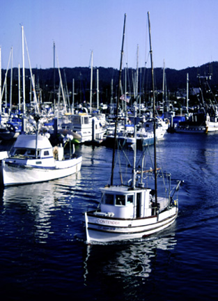

Leaving the Harbor. While you are looking at the spectacular views from the platform, you look down and see a fishing boat leaving the harbor. There are all kinds of fishing boats around the Monterey Bay, to see boats coming and going is a normal thing. This is the time of year for squid fishing, so if you look towards the harbor from early evening on, you can see the bright lights of the squid boats all around the harbor. The photograph was originally produced with late afternoon sun and a 35 mm camera using Provia slide film, shutter speed 250, F8. Photo copyright Andrea L. Arredondo, May 11, 2000.
Updated by Andrea Arredondo
5/19/00